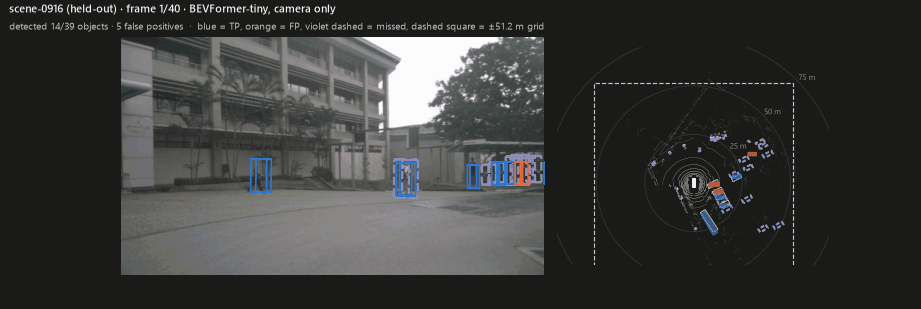

The official BEVFormer-tiny weights, ported to plain PyTorch and run on public nuScenes mini. Errors are sliced by distance, class, size and lighting, and one cheap fix is measured. Within 30 m it finds most things. Past 40 m it goes blind, and past 51.2 m it cannot see anything by construction.
Recall per distance band on held-out scenes, against the BEV grid edge and the roughly 160 m (525 ft) a loaded truck needs to stop from 65 mph.

Recall counts ground-truth objects bucketed by their true distance. Precision counts predictions bucketed by their own predicted distance. AP uses the nuScenes 2 m centre-distance match inside each band. The shaded region is outside the model's ±51.2 m BEV grid.
"All mini" adds 8 scenes that are part of BEVFormer's training split, so its numbers are optimistic. The drop-off still matches.
Recall per class and distance band. Hover a cell for the object count. Cells with fewer than 5 objects are left blank.
Long vehicles (8 m and up) are found reliably up close but almost never at 40 m or more. Centre error grows about fourfold from 0–10 m to 40–50 m, mostly along the camera ray.
Every miss and every false positive at the operating threshold gets one tag. Rules, in priority order: outside the grid, found below threshold, wrong class, same-class box 2–4 m away (depth), ≤40% visible, else missed. False positives: duplicate, wrong class, depth-shifted, or a ghost with or without LiDAR support.
Frames ranked by missed large vehicles (×3), other in-grid misses and confident false positives. Each comes with an automatic one-line diagnosis. Click an image to enlarge it.
Drop any camera box whose box, grown by 0.5 m per side, contains no LiDAR return. LiDAR only vetoes boxes; it never creates or moves one. The setting was chosen before looking at results, and a sweep shows how sensitive it is.
One command reruns inference, the official nuScenes eval, slicing, the fix and every figure. It is capped at 90% of CPU threads and GPU memory.
python -m bevdiag run --dataroot data/nuscenesMetrics: nuScenes devkit DetectionEval (detection_cvpr_2019) on mini_val. Slices: the repo's own nuScenes-style matcher, cross-checked against the devkit in unit tests. All numbers on this page come from report_data.json, written by that run.